behind the pattern of Boston Chinatown Chinese restaurant signs
By Chang Liu & Sowparnika Namachivaya Vallatharasu
Do you feel like you've seen a lot of similar Chinese restaurant signage? Yellow background, red letters, and big Chinese names… Why do Chinese restaurants always look so “Chinese”?
In the first few years of the 20th century, Boston's Chinatown took shape as more restaurants and stores opened. Today, more than 100 years later, Chinatown is a business district, a residential neighborhood, and a record of Boston's Chinese immigrant history. Generations of immigrants have left different marks on the area.
Why do Chinese restaurants always look so “Chinese”? The first step is to understand what Chinese restaurant signs look like.
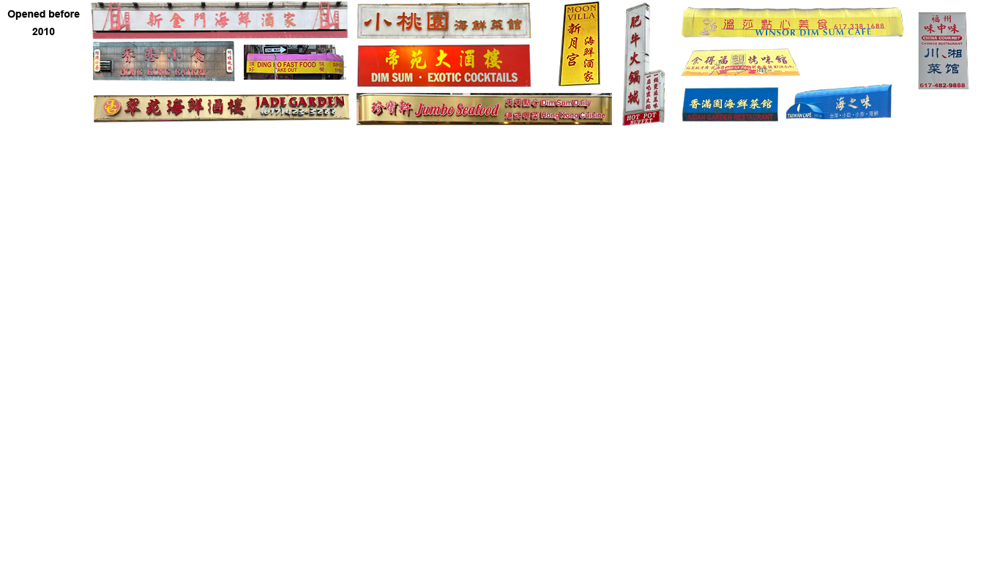
Excluding Asian fusion cuisine, Japanese and Korean restaurants, milk tea stores, bakeries, and other stores, 36 Chinese restaurants are currently open in and around the Chinatown area.
14 of them opened before 2010. They almost look like the most standard stereotype of a Chinese restaurant, with bright and colorful signs.
Among the restaurants that opened between 2011 and 2015, Jiangnan was the first one that used black as the background color of its sign, and also the first restaurant providing Jiangsu and Zhejiang cuisine in the sample.
Five years later, the number of restaurants using black as the background color of their signs has increased significantly, while 3 restaurants opened during this period are Sichuan and Hunan restaurants.
Of the 6 restaurants that have opened in the last 3 years, 4 are chain restaurants, a number that was 0 for restaurants that opened before 2010.
Pictured here are all the 36 Chinese restaurants currently in business in Boston's Chinatown.
After scrolling through the 36 restaurant signs, which color stands out to you the most? After identifying the percentage of colors on the sign by code, the data showed that the percentage of red, yellow and black stood out.
Red
Imagine combining all the signs on one large canvas. In this canvas, the percentage of red pixels is 21.93%. The color red is eye-catching and bright, and very importantly, it represents good luck. In Chinese, there is a common word for prosperity, "hong huo", which would be directly translated as "red" and "fire". In addition to good luck, the color red is also linked to spiciness.
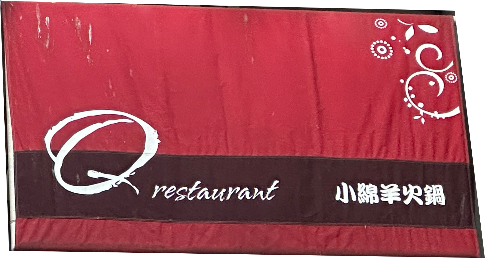
The Q, which has the highest percentage of red on its sign.
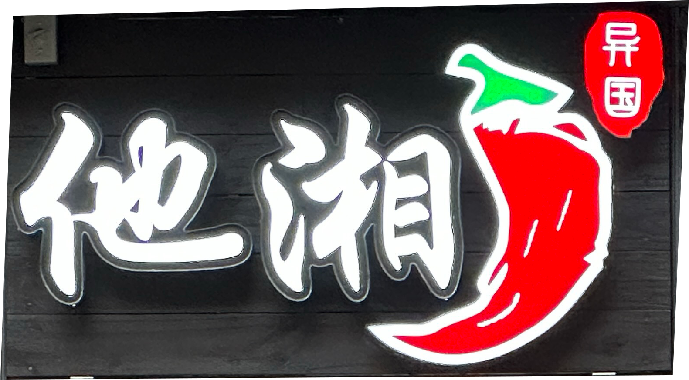
Hunan Gourmet, red is the color of chili peppers here.
Yellow
Yellow is also an eye-catching and bright color. In ancient times, yellow used to be the color reserved for Chinese royal families. Also, yellow represents the color of gold, suggesting wealth.
Black, as a neutral color, is a common color in signs, and it is no exception in Chinese restaurant signs. Black usually appears as the background color of the sign.
In addition to the colors, the names of the Chinese restaurants show an interesting pattern.
Within the sample size, over 36% of the Chinese restaurants have English names that are totally not related to their Chinese names, and 20% of the sample size again chose English names that are not accurately translated.
Overall, only about 27% (10 restaurants) located in Chinatown chose phonetic translations. This is not common compared to Japanese and Korean restaurants in Boston, their common practice has been to use only English names or choose direct phonetic translations.
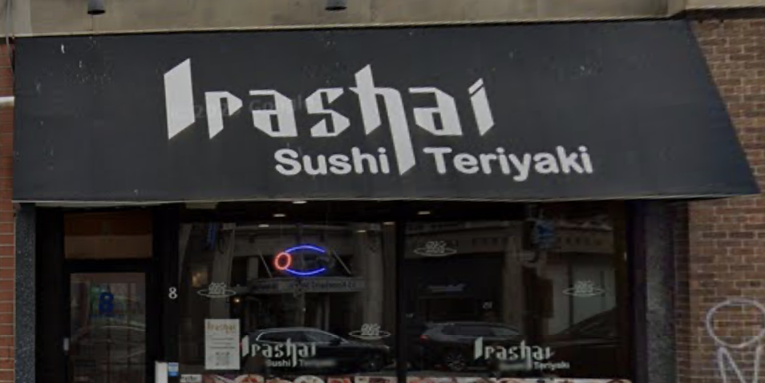
irashai, a Japanese cuisine restaurant, "irashai"(いらっしゃ) means welcome in Japanese.
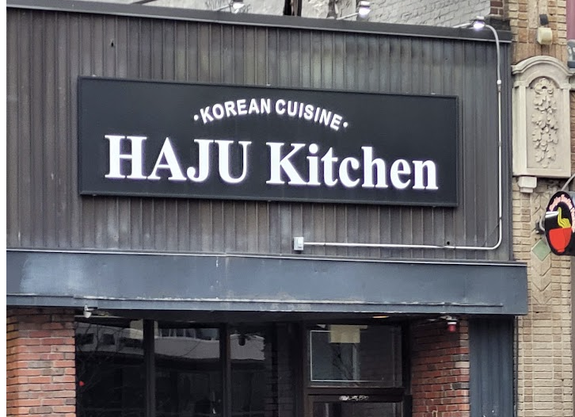
Why do so many Chinese restaurants have English names that are completely or almost unrelated to their Chinese names? One possible answer is that many Chinese sign names are very difficult to translate into English.
Take Hunan gourmet for example, the English name of this restaurant is two words and the Chinese name is four characters. However, these four characters in Chinese are related to an idiom, which means that these four characters express the meaning of much more than four characters. Even when translated as concisely as possible, the original meaning of the Chinese name needs to be expressed in a single sentence.
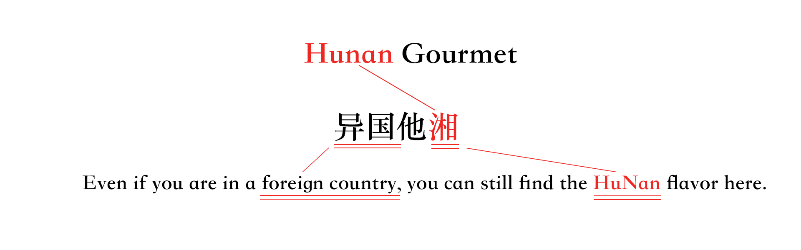
Another possible reason is that even though the restaurant is operating in the United States, the owner still prioritizes the Chinese name. In Arlington, there is a Chinese restaurant called Szechuan's Dumpling, whose Chinese name translates directly into English as Enchanting Hangzhou or Druken in Hangzhou.
Szechuan and Hangzhou are both place names in China, and the straight-line distance between the two is more than 960 miles, as for reference, the distance from Boston to Atlanta, Georgia is about 900 miles. And the cuisines of Szechuan and Hangzhou are quite different, with Szechuan cuisine being spicy and Hangzhou cuisine being sweet.
The owner of Szechuan's Dumpling shared that the restaurant used to be called Szechuan's Dumpling, where they actually sold Szechuan cuisine. Because “foreigners” (non-Chinese residents) in the neighborhood already recognized the name as a Chinese restaurant, the owner decided not to change it. He thinks it is fine as long as Chinese customers can tell the cuisine from the Chinese name.
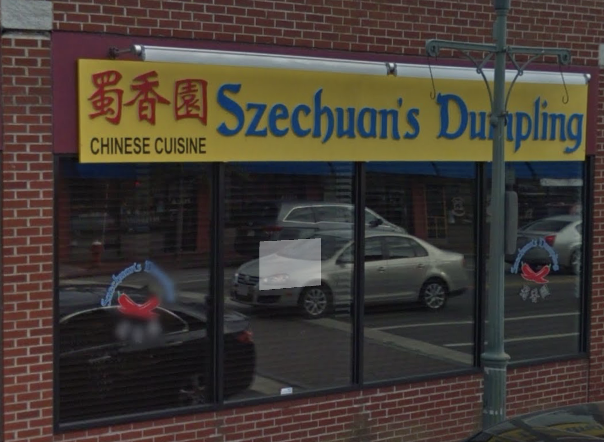
Szechuan‘s dumpling in 2016, the Chinese name basically means the flavor of Szechuan.
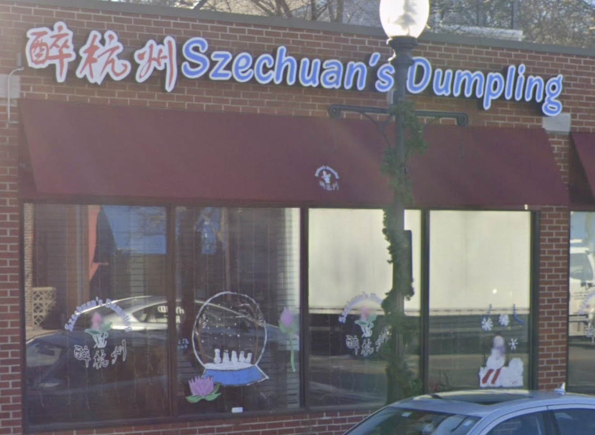
Szechuan‘s dumpling in 2022, the Chinese name basically means Enchanting Hangzhou or Druken in Hangzhou.
Signs and Immigration, Changes in Chinatown
What do Chinese restaurant signs look like? The data above seems to further prove the stereotype: red and yellow color take first and second place in terms of color percentage, and incomprehensible Chinese characters … But at the same time, Chinese restaurant signs are changing.
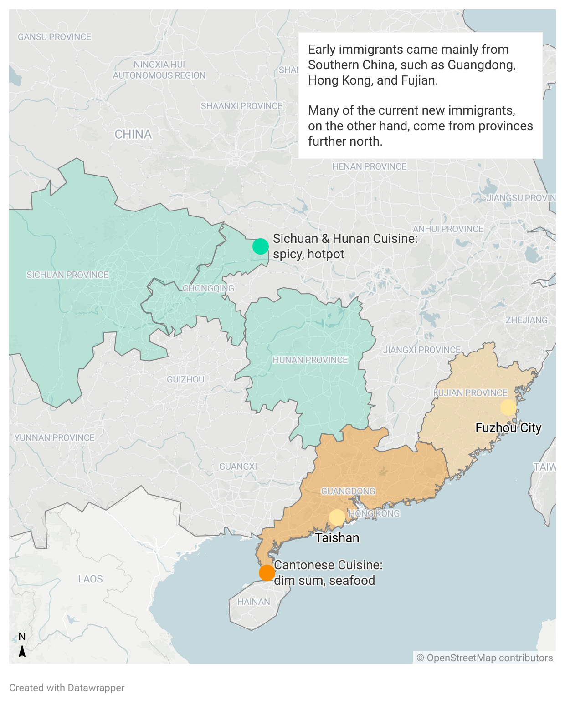
As of the end of 2021, there were over 30 million overseas Chinese from Guangdong, counting as half of the total overseas Chinese population. Due to a significant number of immigrants from Guangdong and Hong Kong, Cantonese cuisine and Hong Kong-style Cantonese cuisine have become indispensable components of overseas Chinese restaurants.
A member from Chinatown Main Street shared the Chinatown history she knew. At the turn of the last century, Boston's Chinese came mainly from Taishan City in Guangdong, and they were naturally an important part of Boston's Chinatown. In the 1950s and 1960s, a large number of Hong Kong people came here. Since the 1990s, more and more people from Fuzhou City, Fujian have arrived. In recent years, most of the newcomers have come from northern provinces.
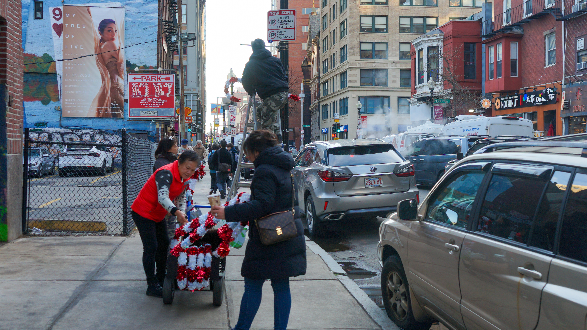
Members from Chinatown Main Street decorate the street light.
Since the introduction of simplified Chinese characters in mainland China in the 1950s, residents of mainland China have gradually stopped using traditional characters. In Hong Kong, Macau, and Taiwan, however, traditional characters are still used today. When the new generation of immigrants joins Chinatown, it will be noticed that the new restaurants opened by them will no longer use traditional characters in signs.
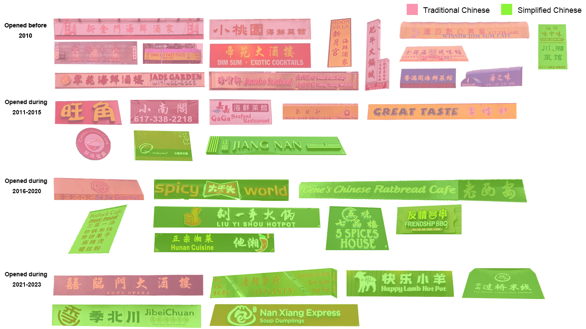
The only restaurant in the 2023 group that uses traditional Chinese characters, "Hei La Moon" was opened in Chinatown about two decades ago and relocated to this new address in 2022 due to urban planning. In recent years, even newly-opened Cantonese restaurants no longer use traditional Chinese characters in their signs.
Of the 36 Chinese restaurants in Boston's Chinatown, 17 are Cantonese or Hong Kong-style Cantonese restaurants, 14 of which opened before 2015. And in Allston, a new restaurant district that has grown in recent years, only one of the more than 15 Chinese restaurants is a Cantonese restaurant.
The new generation of restaurants has also brought an interesting change in the pattern of sign colors.
Comparing the color percentages of the signs from the four periods, it can be noted that the percentage of black is increasing dramatically. This is closely linked to the emergence of a new generation of restaurants.
Chi Hing Law, an international student from Guangdong, explains, "Our local business people are very particular about good luck, and red, which stands for prosperity, is the best. The phone number, the opening date, and everything else should be linked to good luck. Because black is not a lucky color, it's rare to see people using black signs."
Shuyu Liu, an international student living in Hong Kong, added, "A black background with white characters would look like a funeral-related business in Hong Kong, Guangdong."
Empire garden, opened in the 1990s. It is both a reflection of Cantonese culture and carries a unique and exoticized Chinatown flavor. Credit: The Paper
Even though the color black is not an auspicious color in Chinese culture, a lot of the young owners prefer that in order to give a more transformed and modern look to their restaurants. That's not to say that these young owners don't care about good luck, it's just that they don't usually associate sign colors strongly with luck anymore.
Boston's Chinatown dates back to the mid-1870s when most white Bostonians refused to visit Chinese restaurants because of discrimination, racism, and language and cultural barriers. As time changed, Chinese restaurants became more and more popular. Many Chinese restaurants can already be seen in the 1926 map produced by Global Boston. And nowadays, Chinatown is clearly an important part of Boston's business district.
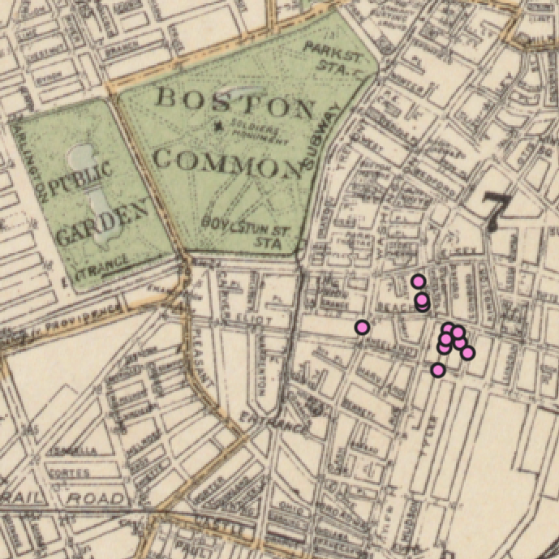
1926, pink dots represent Chinese restaurants.
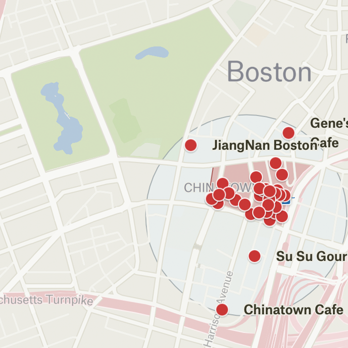
2023, red dots represent Chinese restaurants.
From exoticization, to Cantonese style, to today's creation of signs by a new generation of immigrants, Chinatown restaurant signs are a microcosm of Chinese immigrant history. What will Boston Chinatown look like in the future?